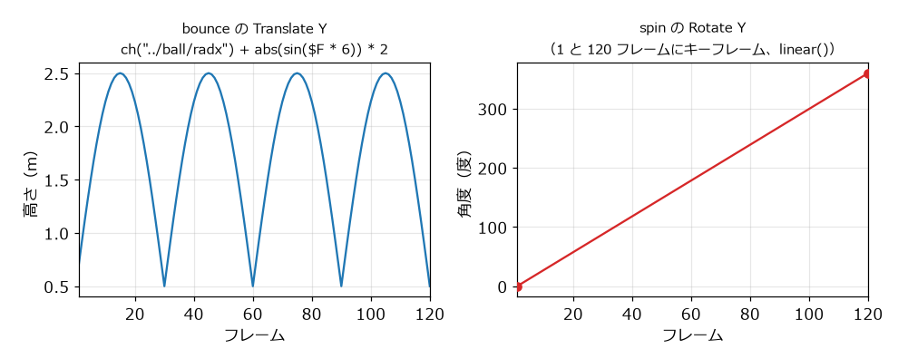

パラメーターとエクスプレッション
はじめてのモデリング の最後で、関係のある値を別々に入力すると、変更のたびに複数の場所を直す必要があることを見た。この章では、パラメーターの値を式で計算するエクスプレッションと、時間とともに値を変えるキーフレームアニメーションを説明する。
パラメーターの名前
パラメーターには、画面に表示されるラベルと、内部名がある。例えば Transform ノードの Translate は、内部名が t で、3 つの成分の内部名が tx、ty、tz である。t のように複数の成分をまとめたものをパラメーターのタプルと呼ぶ。式やスクリプトからパラメーターを参照するときは、内部名を使う。内部名は、パラメーターのラベルにマウスを重ねると表示される。
エクスプレッション
数値のパラメーターには、数値の代わりに式（エクスプレッション）を入力できる。式は、パラメーターの値が必要になるたびに計算される。
Houdini のパラメーターの式は、既定では Hscript という Houdini 独自の式言語で書く。パラメーターのラベルの上で RMB をクリックし、 を選ぶと、そのパラメーターの式を Python で書ける。
Hscript の式では、次のような関数と変数を使える。
関数、変数 |
意味 |
|---|---|
|
他のパラメーターの値。パスは、ノードのパスとパラメーターの内部名を |
|
現在のフレーム番号。 |
|
現在の時刻（秒）。フレーム番号から |
|
1 秒あたりのフレーム数。既定では 24 である。 |
|
hip ファイルを保存したディレクトリ。 |
|
そのノードの名前。 |
|
三角関数。角度は度（degree）で指定する。 |
|
絶対値、最小値、最大値、切り捨て。 |
|
0 から 1 の乱数。同じ引数には同じ値を返す。 |
|
値をある範囲から別の範囲に換算する。 |
警告
Hscript の sin() と cos() は角度を度で受け取るが、VEX と Python（math.sin()）はラジアンで受け取る。言語を切り替えたときに間違えやすい。
チャンネル参照
ch() 関数で他のパラメーターを参照することを、チャンネル参照と呼ぶ。パスは、式を書いたノードからの相対パスで書くのが普通である。例えば、/obj/table/leg のパラメーターから、同じネットワークにある top の Size の X を参照するには、ch("../top/sizex") と書く。.. は、式を書いたノードの 1 つ上の階層（ここでは /obj/table）を表す。同じノードのパラメーターは、ch("sizex") のようにパラメーター名だけで参照できる。
式を手で入力する代わりに、次の操作でも参照を作れる。
参照したいパラメーターのラベルの上で RMB をクリックし、Copy Parameter を選ぶ。
参照を書き込みたいパラメーターのラベルの上で RMB をクリックし、Paste Relative References を選ぶ。
はじめてのモデリング の机に当てはめると、例えば次のように書き換えられる。天板の幅を変えると、脚の位置も自動的に変わるようになる。
パラメーター |
式 |
|---|---|
|
|
|
|
|
|
さらに、机の高さや脚の位置の 0.08 のような値も参照で結び付けたくなる。そのような値をまとめて置く場所として、デジタルアセット で説明するデジタルアセットのパラメーターが使える。
作例: 弾むボール
エクスプレッションとキーフレームの例として、弾みながら回るボールを作る。ネットワークは 図 14 のとおりである。サンプルコードの build_expressions.py でも同じネットワークを作れる。
図 14 弾むボールのネットワーク
/obj に Geometry ノード expressions を作り、その中で次のように作る。
Sphere（
ball）: Primitive Type を Polygon Mesh にし、Radius を0.5、0.5、0.5にする。Transform（
bounce）:ballをつなぎ、Translate の Y に次の式を入力する。1ch("../ball/radx") + abs(sin($F * 6)) * 2sin($F * 6)は、30 フレームで 180 度進む。その絶対値をとると、30 フレームごとに 0 に戻る山の形になる（図 15）。最初の項ch("../ball/radx")はボールの半径で、ボールが床に接する高さを 0 の代わりに半径にするために足している。Grid（
floor）: Size の 1 番目にch("../ball/radx") * 8、2 番目にch("sizex")と入力する。床の一辺がボールの半径の 8 倍になり、正方形になる。Merge（
merge）:bounceとfloorをつなぐ。Transform（
spin）:mergeをつなぐ。Translate の X を1にし、Rotate の Y にキーフレームを打つ（次節）。Null（
OUT）: Display フラグを立てる。
プレイバーの再生ボタンを押すと、ボールが弾む。ball の Radius を変えると、ボールが床に接する高さと床の大きさが自動的に変わる。

図 15 ボールの高さ（左）と回転角（右）。横軸はフレーム番号である。
キーフレームアニメーション
キーフレーム（keyframe）は、あるフレームでのパラメーターの値を指定したものである。キーフレームとキーフレームの間のフレームの値は、自動的に補間される。
spin の Rotate の Y に、1 フレーム目で 0 度、120 フレーム目で 360 度のキーフレームを打つ。
プレイバーで 1 フレーム目に移動する。
Rotate の Y が
0であることを確かめ、Rotate のラベルの上で Alt + LMB をクリックする。キーフレームが打たれ、入力欄の色が変わる。120 フレーム目に移動し、Rotate の Y に
360を入力して、同じ操作でキーフレームを打つ。
既定の補間は、動き始めと止まる直前が緩やかになる曲線（bezier()）である。一定の速さで回したい場合は、補間を直線（linear()）にする。補間の種類は、Animation Editor（）で変えられる。サンプルコードの build_expressions.py は、キーフレームを linear() で作っている（図 15 の右）。
プレイバーの範囲は、既定で 1 フレームから 240 フレームまで、1 秒あたり 24 フレームである。
式と VEX と Python の使い分け
Houdini では、値を計算する方法として、パラメーターの式（Hscript、Python）、VEX、Python のスクリプトを使える。それぞれの向き不向きは次のとおりである。
方法 |
向いている用途 |
|---|---|
パラメーターの式 |
パラメーターどうしの関係、時間による変化など、パラメーター 1 個の値を決める短い計算。 |
VEX（VEX 入門） |
ポイントやプリミティブごとの計算。大量の要素を高速に処理できる。 |
Python（Python による操作） |
ノードの作成や接続、ファイルの操作など、ネットワークそのものを扱う処理。 |